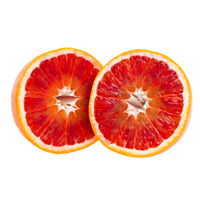

Bergamot

Note: top
Family: citrus
Type: essential oil
Origin: Italy
Ingredient Notes
Bergamot, a small citrus fruit grown primarily in Italy, is a cross between pear lemon and Seville orange or grapefruit. Bergamot is named after the Italian city Bergamo where its oil was first sold. The essential oil is used extensively in fragrance for its freshness. Tea drinkers may recognize bergamot as a flavor in Earl Grey.
Prominent In
Blu Mediterraneo Bergamotto di Calabria (Acqua di Parma), Oud and Bergamot (Jo Malone), Terre de Bois (Miller Harris), Venetian Bergamot (Tom Ford)
Blends Well With
geranium, lavender, lemon, ylang ylang, neroli
Bergamot

Note: top
Family: citrus
Type: essential oil
Origin: Italy
Ingredient Notes
The ‘blood’ refers to the delicious Citrus sinensis orange, which flourishes in Italy. Orange oil is produced by cold-pressing fragrant orange peels. The result is a fresh, tangy, citrus oil that is commonly used in many types of perfume.
It is popular in citrus and floral compositions, and blends beautifully with white flowers like neroli and jasmine.
Prominent In
Eau d'Orange Verte (Hermes), Orange Sanguine (Atelier Cologne), Oranges and Lemons Say The Bells of St. Clements (Heeley), Orange Star (Tauer Perfumes)
Blends Well With
citrus, jasmine, neroli, sandalwood, tonka bean, vanilla